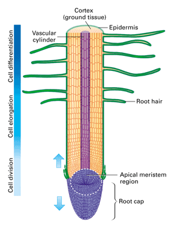
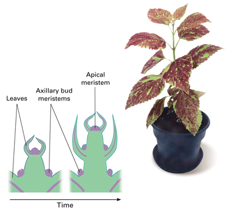

Objectives
- Identify the locations of meristematic tissue in a plant.
- Compare primary growth in a root and a shoot.
Key Terms
While you will reach your maximum height sometime within the next few years, most plants grow their entire lives. This lifelong growth enables plants to continue increasing their exposure to sunlight, air, and soil.
Meristematic Tissue
Tissues called meristems (MEHR uh stemz) generate new dermal, vascular, and ground tissue in plants throughout their lives. A meristem consists of groups of cells that divide by mitosis, generating new cells that will later differentiate into one of the three main cell types. Meristems located in the tips of roots and buds of shoots are called apical meristems (AP ih kul). The apical meristems produce the new cells that enable a plant to grow in length, both above and below ground, as well as to branch. Growth in plant length is called primary growth.
Primary Growth of Roots
The very tip of the root is the root cap, a thimblelike cone of cells that protects the delicate, actively dividing cells of the apical meristem. The root's apical meristem has two roles: It replaces the cells of the root cap that are scraped away by the soil, and it produces the cells for primary growth. Cells produced during primary growth form three concentric cylinders of developing tissue (Figure 20-13). The outermost cylinder develops into the dermal tissue of the root. The middle cylinder—the bulk of the root tip—develops into the root's cortex (ground tissue). The innermost cylinder becomes the vascular tissue.
|  |
Figure 20-13
New root cells are generated in the apical meristem. Those cells produced toward the bottom of the meristem replenish root cap cells. Those toward the top differentiate into cells of the dermal, ground, and vascular tissue, lengthening the root. |
Primary growth depends not only on the addition of new cells by the apical meristem, but on those new cells getting longer. The new cells become longer mainly by taking up water. This process of elongation is what actually forces the root tip through the soil.
Primary Growth of Shoots
A shoot's apical meristem is a dome-shaped mass of dividing cells at the very tip of the terminal bud (Figure 20-14). Elongation occurs just below this meristem. The elongating cells push the apical meristem upward, instead of downward as in the root. As the apical meristem advances upward, some of its cells are left behind. These pockets of meristematic cells form axillary buds at the bases of new leaves. Axillary buds give rise to branches that also show primary growth as they grow outward from the main stem. As in the root, the apical meristem forms three concentric cylinders of developing tissue. Similarly, each cylinder in the shoot develops into one of the shoot's three main tissue systems—dermal, ground, or vascular tissues.
Primary growth accounts for a plant's lengthwise growth. The stems and roots of many plants increase in thickness, too. You will explore how this happens in Concept 20.4.
|  |
Figure 20-14
The diagrams show growth of the meristem over time. Note that as the apical meristem is pushed upward, new axillary buds have formed in each new axil. |
Concept Check 20.3
1. Draw a simple plant and note the locations of meristems.
2. Compare and contrast primary growth in a root and a shoot.
3. Describe the function of the root cap.